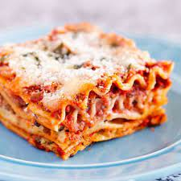

Lasagna
Lasagna

A rich and creamy whole-wheat pasta dish filled layer by layer with refreshingly fresh onions and garlic, lathered in a succulent sauce and topped with imported, premium quality mozzarella.
- 1 lb. italian sausage
- 3/4 lb. lean ground beef
- 1/2 cup minced onion
- 2 cloves garlic, crushed
- 1 (28 0z.) can crushed tomatoes
- 2 (6 oz.) cans tomato paste
- 2 (6.5 oz.) cans canned tomato sauce
- 1/2 cup water
- 2 tbl. white sugar
- 1 1/2 tspn. dried basil leaves
- 1/2 tspn. fennel seeds
- 1 tspn. itatlian seasoning
- 1 1.2 tspn. salt, divided, or to taste
- 1 1/4 tspn. ground black pepper
- 4 tspn. chopped fresh parsley
- 12 lasagna noodles
- 16 oz. ricotta cheese
- 1 egg
- 3/4 lb. mozzerella cheese, sliced
- 3/4 cup grated parmesan cheese
In a Dutch oven, cook sausage, ground beef, onion, and garlic over medium heat until well browned. Stir in crushed tomatoes, tomato paste, tomato sauce, and water. Season with sugar, basil, fennel seeds, Italian seasoning, 1 teaspoon salt, pepper, and 2 tablespoons parsley. Simmer, covered, for about 1 1/2 hours, stirring occasionally.
Bring a large pot of lightly salted water to a boil. Cook lasagna noodles in boiling water for 8 to 10 minutes. Drain noodles, and rinse with cold water. In a mixing bowl, combine ricotta cheese with egg, remaining parsley, and 1/2 teaspoon salt.
Preheat oven to 375 degrees F (190 degrees C).
To assemble, spread 1 1/2 cups of meat sauce in the bottom of a 9x13-inch baking dish. Arrange 6 noodles lengthwise over meat sauce. Spread with one half of the ricotta cheese mixture. Top with a third of mozzarella cheese slices. Spoon 1 1/2 cups meat sauce over mozzarella, and sprinkle with 1/4 cup Parmesan cheese. Repeat layers, and top with remaining mozzarella and Parmesan cheese. Cover with foil: to prevent sticking, either spray foil with cooking spray, or make sure the foil does not touch the cheese.
Bake in preheated oven for 25 minutes. Remove foil, and bake an additional 25 minutes. Cool for 15 minutes before serving.
There is a reason Garfield's favorite dish is this wonderfull italian dish. And now that you have the recipe to make the world's best lasagna, you too can now savor a cats favorite meal!